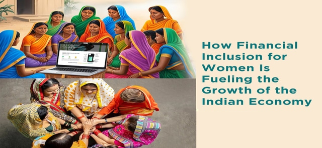

Financial Services
Empoering women Financially
The bank is successful because it provides financial support on flexible terms and tailors its loans to the real needs of women borrowers. Moreover, apart from access to finance, the WCB provides free advice and guidance on business start-up and development, which are also areas where women are under-served.
Financial inclusion is critical to achieving the economic empowerment of women—one of the targets under the fifth Sustainable Development Goal on gender equality. In India, one in every five women lack access to a bank account. Although the country programmes promoting financial inclusion have increased the percentage of women having access to a bank account, wide gaps remain in account use, and access to savings and credit.
Investment Portfolio Tracker
Empowering Women Economically

One of the most compelling reasons for women to invest in mutual funds is the need to close the gender wealth gap. This disparity in financial resources between men and women has far-reaching implications.Mutual Fund Investments for women can play a crucial role in bridging this gap by offering them the opportunity to accumulate wealth and gain financial security.
Smart investing is a pathway to financial independence and security. It empowers women to take control of their future, reduce dependency, and make independent decisions as regards children education and their retirement, etc.